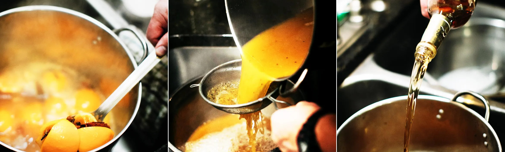

Boilo

Description
Boilo is a boozy staple found throughout Pennsylvania's anthracite coal region. Derived from krupnikas — a traditional Lithuanian honey liqueur — this hot drink is how the descendants of the original Lithuanian coal miners pay homage to their forefathers.
Although boilo is typically reserved for special occasions, the drink's spices, higher viscosity, and hot temperature are ideal to warm you up on any cool night!
Ingredients
- 3 Oranges
- 2 Lemons
- 2 cups Honey
- 2 cups ginger ale
- 2 cinnamon sticks
- 1/2 tsp cardamom seeds
- 1/2 tsp caraway seeds
- 1/2 tsp whole allspice berries
- 1/2 tsp whole cloves
- 1/2 tsp whole black peppercorns
- 1 750ml bottle Four Queens whiskey (if unobtainable, any blended whiskey will suffice)
- Cheesecloth
- 1 additional 750ml empty bottle, or 2 empty mason jars with lids
Steps
- Wash oranges and lemons, then cut them into circular slices approximately 1/4" thick each (keep the peels on)
- Combine all ingredients except for the whiskey into a large stock pot
- Place the uncovered pot on a burner and then set it to Medium-Low heat
- Immediately stir the mixture to dissolve the honey
- Stir occasionally while the mixture heats up
- Pull the mixture off of the burner after it begins steaming, but before it starts boiling
- Allow the mixture to cool until safe to the touch, then stir in the whiskey; Be sure to save the empty bottle
- Place a double layer of cheesecloth over a strainer or colander and pour the boilo through it into another pot
- Pull out the cinnamon sticks, then bundle up and squeeze the cheesecloth to get as much liquid out as you can
- Taste test the boilo (for science). You can stir in more honey if you prefer it sweeter
- When satisfied, use a funnel to pour the boilo back into the whiskey bottle, and any remaining boilo can be funneled into mason jars
- Put the cap back on the whiskey bottle(s) and/or the lids onto the mason jars
- Boilo keeps at room temperature for several weeks
- To enjoy: pour the desired amount into a saucepan or pot and heat until steaming. Do not boil!
- Pour into heat-safe glassware, sip and enjoy! Į sveikatą!